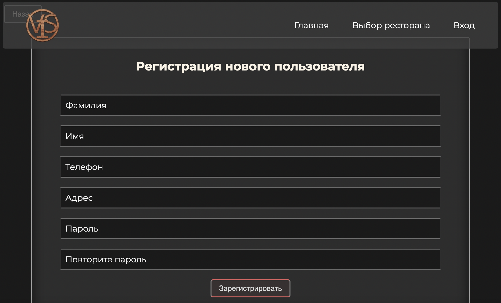
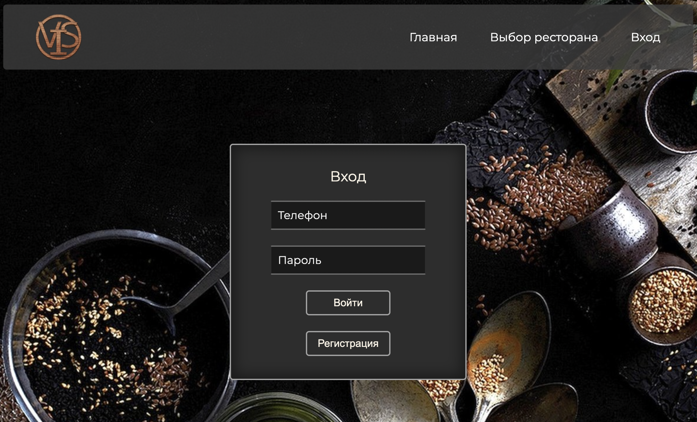

<div class="wrapper">
  <div class="paige__container">
    <div class="reference__box">
      <h1 class="reference_title">Информация о разработчиках сайта</h1>
      <p class="reference_text">
        Данный проект был разработан студентами Самарского университета имени С.П.Королева.
      </p>

      <p class="reference_text pre">
        Создатели проекта:<br>
        Геккель Виктория<br>
        Малинин Игорь<br>
        Маратов Серик<br>
      </p>

      <p class="reference_text">Автоматизированная система заказов блюд и напитков в ресторанах сети VIS
      <br>Руководство по использованию:
      </p>
      <div class="flexforrefli">
        <ul class="reference-list">
          <li class="reference-element"><a class="reference-link" href="#auth1">Регистрация и авторизация</a></li>
          <li class="reference-element"><a class="reference-link" href="#restCh">Выбор ресторана</a></li>
          <li class="reference-element"><a class="reference-link" href="#dishCh">Выбор блюд</a></li>
          <li class="reference-element"><a class="reference-link" href="#drinkCh">Выбор напитков</a></li>
          <li class="reference-element"><a class="reference-link" href="#basket">Корзина с заказами</a></li>
          <li class="reference-element"><a class="reference-link" href="#checkout">Оформление заказа</a></li>
          <li class="reference-element"><a class="reference-link" href="#status">Статус заказа</a></li>
          <li class="reference-element"><a class="reference-link" href="#history">История заказов</a></li>
        </ul>
      </div>

      <div class="reference-explanation">
        <h1 class="exp-title" id="auth1">Регистрация и авторизация</h1>
        <p class="reference_text">Перед тем как делать заказ в ресторане вам необходимо зарегистрироваться или если вы уже зарегистрированы, авторизоваться в системе. Для регистрации в системе нажмите на кнопку вход, на верхней панеле сайта. В открывшейся вкладке нажмите на кнопку зарегистрироваться и введите все требуемые данные. После того, как вы нажмете кнопку зарегистрироваться, вход в систему будет выполнен автоматически.</p>
        <div class="img">
          
        </div>
        <p class="reference_text">Для авторизации в системе, нажмите на кнопку вход на верхней панеле сайта. В открывшейся вкладке введите номер телефона и пароль, под которыми вы регистрировались на сайте.</p>
        <div class="img">
          
        </div>
      </div>

      <div class="reference-explanation">
        <h1 class="exp-title" id="restCh">Выбор ресторана</h1>
        <p class="reference_text">После авторизации на сайте вы будете автоматически перенаправлены на вкладку выбора ресторана. На данной вкладке вы можете выбрать один из существующих в сети ресторанов нажав на его изображение. После этого вы автоматически попадете на страницу выбранного ресторана, на которой вы сможете выбрать интересующие вас блюда и напитки.</p>
        <div class="img">
          
        </div>
      </div>

      <div class="reference-explanation">
        <h1 class="exp-title" id="dishCh">Выбор блюд</h1>
        <p class="reference_text">Для выбора блюд пролистайте страницу выбранного ресторана до раздела блюда. В данном разделе вы можете посмотреть названия, описания, граммовку, калорийность и цену блюд. В будущей версии будут добавлены изображения блюд.
          По нажатию на кнопку категорий блюд вам будут представлены блюда только выбранной категории.
          Для добавления блюда в корзину необходимо указать количество блюд нажав на кнопку + или вписать его вручную в поле ввода и нажать кнопку "в корзину". Для уменьшения количества блюд, нажать кнопку минус или вписать новое значение в поле ввода.
        </p>
        img
      </div>

      <div class="reference-explanation">
        <h1 class="exp-title" id="drinkCh">Выбор напитков</h1>
        <p class="reference_text">Для выбора напитков пролистайте страницу выбранного ресторана до раздела напитки. В данном разделе вы можете посмотреть названия, описания, объем, цену и цену за бутылку напитков. В будущей версии будут добавлены изображения напитков.
          По нажатию на кнопку категорий напитков вам будут представлены напитки только выбранной категории.
          Для добавления напитка в корзину необходимо указать количество напитков нажав на кнопку + или вписать его вручную в поле ввода и нажать кнопку "в корзину". Для уменьшения количества напитков, нажать кнопку минус или вписать новое значение в поле ввода.
        </p>
        img
      </div>

      <div class="reference-explanation">
        <h1 class="exp-title" id="basket">Корзина с заказами</h1>
        <p class="reference_text">
          Для того, чтобы оформить заказ, вам необходимо нажать кнопку корзина на верхней панели сайта.
          В открывшемся окне, вы увидете все блюда и напитки, которые вы добавили в корзину.
          На этой вкладке вы сможете удалить блюдо или напиток, который вы решите не заказывать.
          По нажатию на кнопку оформить, откроется вкладка с оформлением заказа.
        </p>
        img
      </div>

      <div class="reference-explanation">
        <h1 class="exp-title" id="checkout">Оформление заказа</h1>
        <p class="reference_text">
          Для оформления заказа вам сначала нужно выбрать, будет ли это заказ в ресторане или на доставку.
          1
        </p>
        img
      </div>
    </div>
  </div>
</div>
